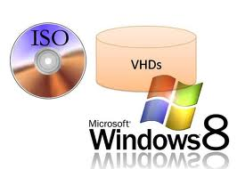
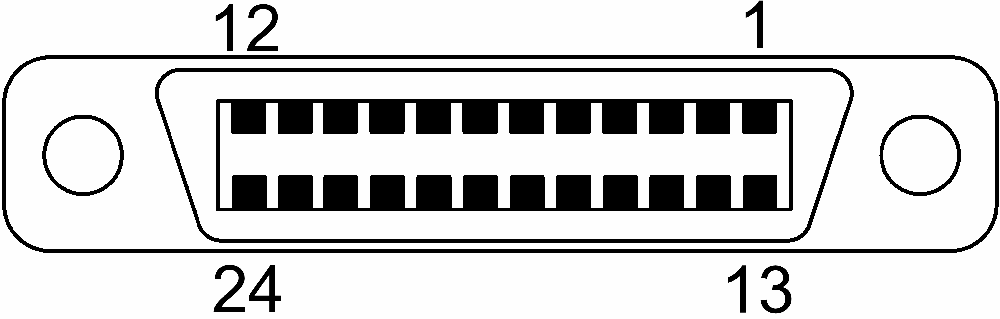

iso .iso è una estensione utilizzata generalmente per immagini ISO, cioè un file che contiene l'intero contenuto di un disco ottico (CD o DVD) che può essere usato direttamente (tramite software di emulazione) oppure inciso su un supporto fisico tramite il processo di masterizzazione. Il nome dell'estensione deriva da ISO 9660, il file system standard per i CD-ROM e che coincide con il contenuto del file ISO.
ansi Standard che definisce, fra l'altro, i codici usati per visualizzare le lettere a colori sullo schermo. Se la BBS chiede se volete usare la grafica ANSI, rispondete di si: se sul video compaiono dei geroglifici disattivate la scelta fatta usando i menu e cercando la pagina delle impostazioni della vostra utenza.
ieee La IEEE Computer Society è una delle società tecniche dello Institute of Electrical and Electronics Engineers (IEEE, usualmente letto "eye-triple-e"). Fu fondata nel 1963 quando l'American Institute of Electrical Engineers (AIEE) e l'Institute of Radio Engineers (IRE) si fusero a creare lo IEEE. Il Subcommittee on Large-Scale Computing dell'AIEE (fondato nel 1946) e il Technical Committee on Electronic Computers dell'IRE (fondato nel 1948) si unirono per creare lo IEEE Computer Group, che nel 1971 divenne la attuale IEEE Computer Society. La IEEE Computer Society è la più grande società tecnica di professionisti dell'informatica nel mondo.
